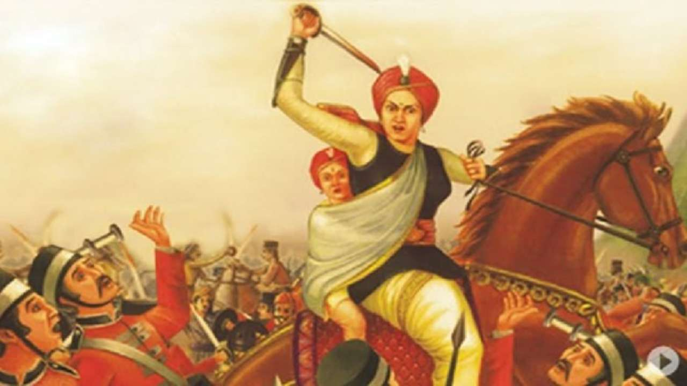

Queen of Jhansi
Rani Laxmi Bai

Great Warrior, 21 November (1853 – 1858)
Background History
Rani Laxmi Bai, popularly known as ‘Jhansi ki Rani,’ is a symbol of women’s empowerment in India and
one of the nation’s greatest liberation warriors. She is remembered as a famous character in Indian history, and her tenacity and resolve were unrivalled. She was widely regarded as India’s “Joan of Arc," and was one of the pivotal figures in India’s first fight for liberation.
Laxmi Bai battled bravely against the British and made an indelible mark on Indian history.
Rani Lakshmibai was born on 19 November 1828 in the town of Varanasi into a Marathi Karhade Brahmin family.
She was named Manikarnika Tambe and was nicknamed Manu.
Her father was Moropant Tambe and her mother Bhagirathi Sapre (Bhagirathi Bai).
On her death anniversary,
let us look at a list of facts about India’s well known female martyr that
every nationalist should be aware of:
While it is widespread knowledge that Laxmi Bai was born on November 19, 1828,
in Varansi in a Brahmin, Marathi Karhade family, the exact birthdate is still a topic of debate.
Laxmi Bai lost her mother when she was as young as 4 years old.
Her parents were the cousins of Nana Sahib.
As she grew up with Nana Sahib and Tatya Tope, she was trained in Martial Arts,
fighting with swords, and horse riding.
Due to such unusual upbringing, she was more independent than other girls of her age.
She acquired the name Laxmi Bai after she was married at the age of 14,
to the Raja of Jhansi, Gangadhar Newalkar.
She lost her first child when he was just 4 months old.
Two years later, she adopted Anand Rao, who was the son of Gangadhar Rao’s cousin.
Jhansi Wali Rani
Written by Subhadra Kumari Chauhan,the poem is about the life of Rani Lakshmibai.
The patriotic poem talks about her life history and glorifies the contribution of the Queen of Jhansi towards
India’s freedom struggle.
Here is excerpt:
Sinhasan hil uthey raajvanshon ne bhrukuti tani thi,
Budhey Bharat mein aayee phir se nayi jawani thi,
Gumi huee azadi ki keemat sabney pehchani thi,
Door firangi ko karne ki sab ne mann mein thani thi.
Chamak uthi san sattavan mein, yeh talwar purani thi,
Bundeley Harbolon ke munh hamney suni kahani thi,
Khoob ladi mardani woh to Jhansi wali Rani thi.
INSPIRING QUOTES BY RANI LAXMI BAI:
“I shall not surrender my Jhansi"
“If defeated and killed on the field of battle, we shall surely earn eternal glory and salvation"
“We fight for independence. In the words of Lord Krishna we will,
if we are victorious, enjoy the fruits of victory”
If you have time, you should read more about this incredible human being on his
Wikipedia entry
.